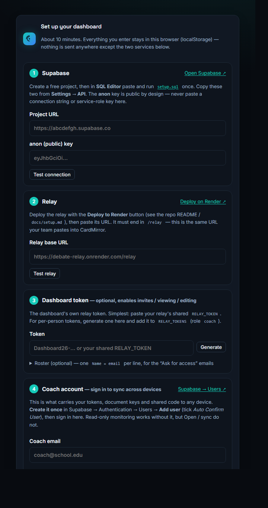
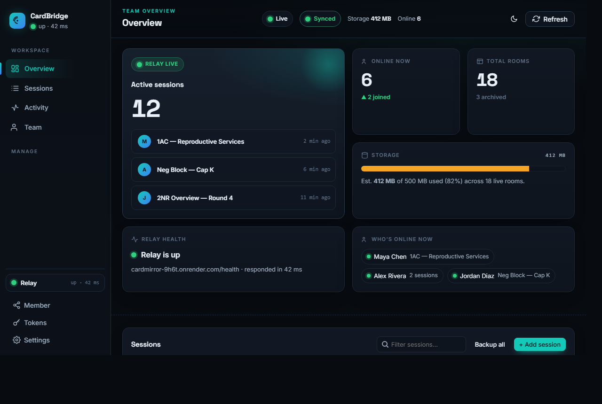

Set up CardBridge in about 20 minutes
A free, always-on, end-to-end-encrypted collaboration relay for your debate team — plus this dashboard to watch it all. Three places to visit: a database, a relay, and this dashboard. Follow along; tick each step as you go and your progress is saved.
Create your database
Supabase · ~7 min- Go to supabase.com → New project. Pick a name and a strong database password — save that password, you'll need it in step 2.
- When it's ready (~2 min), open Project Settings → Database → Connection string and select the Session pooler tab. Copy that URI and replace
[YOUR-PASSWORD]with your DB password. - Open SQL Editor → New query, paste all of
setup.sql, and click Run. (Safe to re-run.)
pooler, you have the wrong one. This is the single most common setup mistake.Deploy the relay
Render · ~10 minClick the button, point Render at the repo, and paste your Session-pooler string when it asks for DATABASE_URL:

- Render reads
render.yamland proposes one free web service. It prompts forDATABASE_URL— paste the pooler string from step 1. It generates a randomRELAY_TOKENfor you. - Click Apply / Deploy. Wait until it shows Live and the health check passes.
- Note two values: your Relay URL (service URL +
/relay) and, from Environment → RELAY_TOKEN, your relay token.
Keep it awake
UptimeRobot · ~5 min · optionalRender's free tier sleeps after ~15 min idle and takes ~60s to wake — long enough to look broken mid-round. A free pinger prevents it.
- Sign up at uptimerobot.com → Add New Monitor → type HTTP(s).
- URL = your relay URL +
/health(e.g.https://…onrender.com/relay/health). Interval = 5 minutes. Save.
Open the dashboard & connect
~3 minOpen this dashboard's URL. If it's your first time, a guided wizard appears. Fill each step and hit its Test button — it live-checks the connection before you save.

- Supabase — Project URL + anon key (Project Settings → API). Never the service-role key.
- Relay — the relay URL from step 2 (ends in
/relay). - Dashboard token — paste your
RELAY_TOKEN, or Generate one and add it to the relay's tokens.
Sign in to sync
coach account · ~2 minThe coach account is what carries your tokens, document keys and shared code to any device. Create it once, then sign in.
- In Supabase → Authentication → Users → Add user. Enter an email + password and tick Auto Confirm User.
- Back in the dashboard's wizard step 4 (Coach account), enter that email + password and hit Sign in & sync (or use the Sign in chip in the header later).
- The header's sync chip turns green “Synced”. On a new device, just sign in with the same account and everything restores.
Point CardMirror at your relay
~2 min per machineOn each teammate's CardMirror desktop (the full build — CardMirror Lite has no collaboration):
- Open Settings → Collaboration.
- Paste the Relay URL and that machine's relay token.
- Everyone must run the same CardMirror version — older builds can't read the current session format.
Share to students & open docs
~2 minSo the dashboard can open a document, a student invites the dashboard's member code — the same invite flow they already use.
- Open the Member panel → Copy code. Optionally turn on “Use one code across my devices” so students invite it just once.
- A student invites that code in CardMirror. The dashboard learns the doc's name and gets its key — now an Open button appears on that session.
- Open it to view/edit with native styling, go live, export, or send notes.
